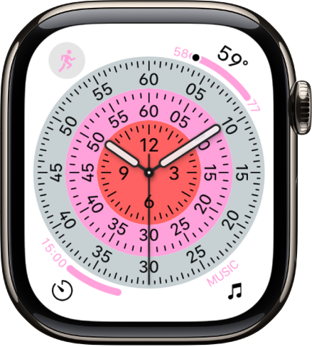

这款表盘在不同刻度盘上分别显示小时、分钟和秒钟，以实现精准计时。轻点表盘可将各个刻度盘放大 5 倍，调小时间增量并提高精确度。
下方的文件数包括本地化资源。固件名称键能确认包的归属；组件的圆屏点击边界、亮屏过渡与 AOD 对照均待设备验证。
原始包 已解析属性表 Mach-O 方法与成员 ARM64 汇编 解出的图集
.strings × 132 .plist × 3 .car × 1 无扩展名 × 1
原始包 已解析属性表 Mach-O 方法与成员 ARM64 汇编 解出的图集
.strings × 132 .plist × 3 .car × 1 无扩展名 × 1
原始包 已解析属性表 Mach-O 方法与成员 ARM64 汇编 解出的图集
.strings × 132 .plist × 3 .car × 1 无扩展名 × 1
NTKExactitudesFaceBundle.bundleFACE_STYLE_EXACTITUDES_DESCRIPTIONhwNaturalhwRadiantGoldhero01hero02hero05hero03hero06goldhero04hero07hero08slatenaturalEDIT_OPTION_LABEL_DIAL_OPEN_IIEDIT_OPTION_LABEL_DIAL_OPEN_IEDIT_OPTION_LABEL_BACKGROUND_ONEDIT_OPTION_LABEL_DIAL_CLOSEDEDIT_MODE_LABEL_STYLEEDIT_OPTION_LABEL_BACKGROUND_OFFEDIT_MODE_LABEL_BACKGROUND色组与设备条件 Exactitudes-F2026.color.plist Exactitudes.color.plist 共享色组与默认值
-[NTKExactitudesFaceView tritium_didTransitionToTritiumOn];-[NTKExactitudesFaceView tritium_didTransitionToTritiumOff];-[NTKExactitudesFaceView tritium_usesWidgetTransitionPresetColors];-[NTKExactitudesFaceView tritium_createFaceAnimator];-[NTKExactitudesFaceView tritium_alwaysOnTimelines];-[NTKExactitudesFaceView _tritium_updateComplicationColors];-[NTKExactitudesFaceView tritium_shouldApplyOverrideDate];-[NTKExactitudesFaceView tritium_willTransitionToTritiumOnToFrameSpecifier:];-[NTKExactitudesFaceView tritium_willTransitionToTritiumOffFromFrameSpecifier:];-[NTKExactitudesFaceView _applyTritiumComplicationColorsIfNeeded];-[NTKExactitudesFaceView _removeTritiumComplicationColorsIfNeeded];-[NTKExactitudesColorPalette minuteHandOutlineColor];-[NTKExactitudesColorPalette secondaryComplicationColor];-[NTKExactitudesColorPalette minuteHandInlayColor];-[NTKExactitudesColorPalette secondHandColor];-[NTKExactitudesColorPalette second];-[NTKExactitudesColorPalette secondColor];-[NTKExactitudesColorPalette hardwareSecond];-[NTKExactitudesColorPalette hourMinute];-[NTKExactitudesColorPalette minuteColor];-[NTKExactitudesColorPalette minuteHandOutlineColor];-[NTKExactitudesColorPalette secondaryComplicationColor];-[NTKExactitudesColorPalette minuteHandInlayColor];-[NTKExactitudesColorPalette secondHandColor];-[NTKExactitudesColorPalette secondColor];-[NTKExactitudesColorPalette minuteColor];-[NTKExactitudesDialView setExpansionTransitionProgress:];-[NTKExactitudesDialView backgroundStyleTransitionProgress];-[NTKExactitudesDialView expansionTransitionProgress];-[NTKExactitudesDialView setBackgroundStyleTransitionProgress:];-[NTKExactitudesFaceDialColorsWrapper secondHandColor];-[NTKExactitudesFaceDialColorsWrapper minuteHandColor];-[NTKExactitudesFaceDialColorsWrapper initWithHourColor:minuteColor:secondColor:foregroundColor:];-[NTKExactitudesFaceDialsView setOverrideDate:duration:];-[NTKExactitudesFaceDialsView allDialsSetBackgroundStyleTransitionProgress:];-[NTKExactitudesFaceDialsView animateDialsToCurrentStyle];-[NTKExactitudesFaceDialsView dialMovementAnimationFramesPerSecond];-[NTKExactitudesFaceDialsView handleTapAnimationAndHideCornerComplications];-[NTKExactitudesFaceDialsView minutesDialExpanded];-[NTKExactitudesFaceDialsView secondsDialExpanded];-[NTKExactitudesFaceDialsView setDialMovementAnimationFramesPerSecond:];-[NTKExactitudesFaceDialsView setDialsToCurrentStyleNoAnimation];-[NTKExactitudesFaceDialsView setMinutesDialExpanded:];-[NTKExactitudesFaceDialsView setMinutesDialExpansionTransitionProgress:];-[NTKExactitudesFaceDialsView setSecondsDialExpanded:];-[NTKExactitudesFaceDialsView setSecondsDialExpansionTransitionProgress:];-[NTKExactitudesFaceDialsView startDialMovementAnimation];-[NTKExactitudesFaceDialsView stopDialMovementAnimation];-[NTKExactitudesFaceView tritium_didTransitionToTritiumOn];-[NTKExactitudesFaceView tritium_didTransitionToTritiumOff];-[NTKExactitudesFaceView tritium_usesWidgetTransitionPresetColors];-[NTKExactitudesFaceView _applyTransitionFraction:fromOption:toOption:forCustomEditMode:slot:];-[NTKExactitudesFaceView tritium_createFaceAnimator];-[NTKExactitudesFaceView tritium_alwaysOnTimelines];-[NTKExactitudesFaceView _configureForTransitionFraction:fromEditMode:toEditMode:];-[NTKExactitudesFaceView setOverrideDate:duration:];-[NTKExactitudesFaceView tritium_willTransitionToTritiumOnToFrameSpecifier:];-[NTKExactitudesFaceView tritium_willTransitionToTritiumOffFromFrameSpecifier:];-[NTKExactitudesFaceView dialExpansionTransitionProgress];-[NTKExactitudesFaceView _applyPrimaryComplicationColor:secondaryComplicationColor:backgroundColor:];-[NTKExactitudesFaceView _handleTapAnimation];-[NTKExactitudesFaceView _setAllDialsBackgroundStyleTransitionProgress:];-[NTKExactitudesFaceView _setDialsToCurrentStyleNoAnimation];-[NTKExactitudesFaceView _transitionDialsInEditorFromStyle:toStyle:fraction:];-[NTKExactitudesFaceView setDialExpansionTransitionProgress:];-[NTKExactitudesFaceView setMinutesDialExpansionProgress:];-[NTKExactitudesFaceView setSecondsDialExpansionProgress:];-[NTKExactitudesMiniClockView _minuteHandInlayColorForConfiguration:enteringAOD:];-[NTKExactitudesMiniClockView _minuteHandOutlineColorForConfiguration:enteringAOD:];-[_TtC24NTKExactitudesFaceBundle20ExactitudesTickLayer initWithLayer:];-[_TtC24NTKExactitudesFaceBundle20ExactitudesTickLayer bounds];-[_TtC24NTKExactitudesFaceBundle20ExactitudesTickLayer setBounds:];-[_TtC24NTKExactitudesFaceBundle20ExactitudesTickLayer initWithCoder:];-[_TtC24NTKExactitudesFaceBundle20ExactitudesTickLayer setCornerRadius:];-[_TtC24NTKExactitudesFaceBundle20ExactitudesTickLayer init];-[_TtC24NTKExactitudesFaceBundle20ExactitudesTickLayer cornerRadius];-[_TtC24NTKExactitudesFaceBundle23NTKExactitudesHandsView secondHandConfiguration];-[_TtC24NTKExactitudesFaceBundle23NTKExactitudesHandsView createMinuteHandView];-[_TtC24NTKExactitudesFaceBundle23NTKExactitudesHandsView minuteHandConfiguration];-[_TtC24NTKExactitudesFaceBundle23NTKExactitudesHandsView createSecondHandView];-[_TtC24NTKExactitudesFaceBundle23NTKExactitudesHandsView applyMinuteHandColor:inlayColor:inlayAlpha:backdropInlayColor:backdropInlayAlpha:];-[_TtC24NTKExactitudesFaceBundle23NTKExactitudesHandsView minuteHandLength];-[_TtC24NTKExactitudesFaceBundle23NTKExactitudesHandsView secondHandLength];-[_TtC24NTKExactitudesFaceBundle32NTKExactitudesMiniClockHandsView secondHandConfiguration];-[_TtC24NTKExactitudesFaceBundle32NTKExactitudesMiniClockHandsView createMinuteHandView];-[_TtC24NTKExactitudesFaceBundle32NTKExactitudesMiniClockHandsView minuteHandConfiguration];-[_TtC24NTKExactitudesFaceBundle32NTKExactitudesMiniClockHandsView createSecondHandView];-[_TtC24NTKExactitudesFaceBundle32NTKExactitudesMiniClockHandsView applyMinuteHandColor:inlayColor:backdropInlayColor:alpha:];-[_TtC24NTKExactitudesFaceBundle32NTKExactitudesMiniClockHandsView minuteHandLength];-[_TtC24NTKExactitudesFaceBundle32NTKExactitudesMiniClockHandsView secondHandLength];-[NTKExactitudesColorPalette colorA];-[NTKExactitudesColorPalette colorB];-[NTKExactitudesColorPalette handDotColor];-[NTKExactitudesColorPalette minuteHandOutlineColor];-[NTKExactitudesColorPalette secondaryComplicationColor];-[NTKExactitudesColorPalette backgroundColor];-[NTKExactitudesColorPalette minuteHandInlayColor];-[NTKExactitudesColorPalette primaryComplicationColor];-[NTKExactitudesColorPalette hourHandInlayColor];-[NTKExactitudesColorPalette secondHandColor];-[NTKExactitudesColorPalette second];-[NTKExactitudesColorPalette hourHandOutlineColor];-[NTKExactitudesColorPalette secondColor];-[NTKExactitudesColorPalette miniClockDateLabelInactiveColor];-[NTKExactitudesColorPalette colorC];-[NTKExactitudesColorPalette dialForegroundColor];-[NTKExactitudesColorPalette hardwareSecond];-[NTKExactitudesColorPalette hourColor];-[NTKExactitudesColorPalette hourMinute];-[NTKExactitudesColorPalette miniClockDateLabelColor];-[NTKExactitudesColorPalette minuteColor];-[NTKExactitudesColorPalette configurationDidChange:];-[NTKExactitudesColorPalette swatchImageForSize:];-[NTKExactitudesColorPalette identifier];-[NTKExactitudesColorPalette handDotColor];-[NTKExactitudesColorPalette minuteHandOutlineColor];-[NTKExactitudesColorPalette secondaryComplicationColor];-[NTKExactitudesColorPalette backgroundColor];-[NTKExactitudesColorPalette minuteHandInlayColor];-[NTKExactitudesColorPalette primaryComplicationColor];-[NTKExactitudesColorPalette swatch];-[NTKExactitudesColorPalette init];-[NTKExactitudesColorPalette setBackgroundStyle:];-[NTKExactitudesColorPalette backgroundStyle];-[NTKExactitudesColorPalette hourHandInlayColor];-[NTKExactitudesColorPalette secondHandColor];-[NTKExactitudesColorPalette copyWithZone:];-[NTKExactitudesColorPalette hourHandOutlineColor];-[NTKExactitudesColorPalette secondColor];-[NTKExactitudesColorPalette isHardwareColor];-[NTKExactitudesColorPalette _brightenUIColor:withLuminance:];-[NTKExactitudesColorPalette miniClockDateLabelInactiveColor];-[NTKExactitudesColorPalette isStandardColor];-[NTKExactitudesColorPalette _exactitudesSeasonalDarkColor];-[NTKExactitudesColorPalette _exactitudesSeasonalLightColor];-[NTKExactitudesColorPalette _hasDarkLightVariants];-[NTKExactitudesColorPalette _seasonalDarkColorLuminance];-[NTKExactitudesColorPalette _seasonalLightColorLuminance];-[NTKExactitudesColorPalette _seasonalPrimaryColor];-[NTKExactitudesColorPalette _seasonalPrimaryColorLuminance];-[NTKExactitudesColorPalette _standardColorLightest];-[NTKExactitudesColorPalette dialForegroundColor];-[NTKExactitudesColorPalette exactitudesCollectionName];-[NTKExactitudesColorPalette exactitudesHardwareCollectionName];-[NTKExactitudesColorPalette hourColor];-[NTKExactitudesColorPalette isHeroColor];-[NTKExactitudesColorPalette miniClockDateLabelColor];-[NTKExactitudesColorPalette minuteColor];-[NTKExactitudesDialView layoutSubviews];+[NTKExactitudesFace _initialDefaultComplicationForSlot:forDevice:];+[NTKExactitudesFace _complicationSlotDescriptors];+[NTKExactitudesFace _richComplicationSlotsForDevice:];+[NTKExactitudesFace _orderedComplicationSlots];+[NTKExactitudesFace _defaultSelectedComplicationSlotForDevice:];+[NTKExactitudesFace _complicationFontStyleForSlot:];-[NTKExactitudesFace complicationSlotsHiddenByEditOption:];-[NTKExactitudesFace curatedGalleryBackgroundColors];-[NTKExactitudesFace _localizedNameForComplicationSlot:];-[NTKExactitudesFace _numberOfOptionsForCustomEditMode:slot:];-[NTKExactitudesFace _defaultOptionForCustomEditMode:slot:];-[NTKExactitudesFace _indexOfOption:forCustomEditMode:slot:];-[NTKExactitudesFace _optionAtIndex:forCustomEditMode:slot:];-[NTKExactitudesFaceBundle _hasHWDefaultColorForDevice:];-[NTKExactitudesFaceDialColorsWrapper init];-[NTKExactitudesFaceDialColorsWrapper secondHandColor];-[NTKExactitudesFaceDialColorsWrapper hourHandColor];-[NTKExactitudesFaceDialColorsWrapper minuteHandColor];-[NTKExactitudesFaceDialColorsWrapper initWithHourColor:minuteColor:secondColor:foregroundColor:];-[NTKExactitudesFaceDialsView handleTapAnimationAndHideCornerComplications];-[NTKExactitudesFaceDialsView initForMiniClockWithFrame:device:colorsWrapper:];-[NTKExactitudesFaceDialsView initWithFrame:device:colorsWrapper:style:];-[NTKExactitudesFaceDialsView setColorsWrapper:];-[NTKExactitudesFaceView _complicationAlphaForEditMode:];-[NTKExactitudesFaceView _homeScreenDateLabelColor];-[NTKExactitudesFaceView _homeScreenBackgroundColor];-[NTKExactitudesFaceView createFaceColorPalette];-[NTKExactitudesFaceView tritium_usesWidgetTransitionPresetColors];-[NTKExactitudesFaceView _applyTransitionFraction:fromOption:toOption:forCustomEditMode:slot:];-[NTKExactitudesFaceView layoutSubviews];-[NTKExactitudesFaceView _applyBreathingFraction:forCustomEditMode:slot:];-[NTKExactitudesFaceView _applyOption:forCustomEditMode:slot:];-[NTKExactitudesFaceView _cleanupAfterEditing];-[NTKExactitudesFaceView _configureComplicationView:forSlot:];-[NTKExactitudesFaceView _loadLayoutRules];-[NTKExactitudesFaceView _applyColorsFromPalette:];-[NTKExactitudesFaceView _homeScreenDateLabelInactiveColor];-[NTKExactitudesFaceView _applyComplicationFont:];-[NTKExactitudesFaceView palette];-[NTKExactitudesFaceView _tritium_updateComplicationColors];-[NTKExactitudesFaceView _keylineFrameForComplicationSlot:selected:];-[NTKExactitudesFaceView _applyRubberBandingFraction:forCustomEditMode:slot:];-[NTKExactitudesFaceView _applyCurrentColorPalette];-[NTKExactitudesFaceView _applyColorsToComplicationsWithPalette:];-[NTKExactitudesFaceView _applyColorsToTimeViewWithPalette:];-[NTKExactitudesFaceView _applyCurrentColorsToTimeViewFromBackgroundStyle:toBackgroundStyle:withFraction:];-[NTKExactitudesFaceView _applyPrimaryComplicationColor:secondaryComplicationColor:backgroundColor:];-[NTKExactitudesFaceView _applyCurrentColorsToTimeView];-[NTKExactitudesFaceView _applyCurrentComplicationColorsFromBackgroundStyle:toBackgroundStyle:withFraction:];-[NTKExactitudesFaceView _applyTritiumComplicationColorsIfNeeded];-[NTKExactitudesFaceView _backdropInlayColor];-[NTKExactitudesFaceView _dialColors];-[NTKExactitudesFaceView _dialColorsFromPalette:];-[NTKExactitudesFaceView _hideCornerComplicationsIfNeeded];-[NTKExactitudesFaceView _removeTritiumComplicationColorsIfNeeded];-[NTKExactitudesFaceView _revealCornerComplicationsIfNeeded];-[NTKExactitudesFaceView _revealCornerComplicationsIfNeededWithAlpha:];-[NTKExactitudesFaceView _setBackgroundColorForBackgroundOn:palette:];-[NTKExactitudesFaceView _syncCornerComplicationVisibilityForCurrentStyle];-[NTKExactitudesFaceView applyComplicationColors];-[NTKExactitudesMiniClockView layoutSubviews];-[NTKExactitudesMiniClockView _applyColorsToHandsViewWithConfiguration:];-[NTKExactitudesMiniClockView _dummyColors];-[NTKExactitudesMiniClockView _hourHandInlayColorForConfiguration:enteringAOD:];-[NTKExactitudesMiniClockView _hourHandOutlineColorForConfiguration:enteringAOD:];-[NTKExactitudesMiniClockView _minuteHandInlayColorForConfiguration:enteringAOD:];-[NTKExactitudesMiniClockView _minuteHandOutlineColorForConfiguration:enteringAOD:];-[NTKExactitudesMiniClockViewConfiguration colorsWrapper];-[NTKExactitudesMiniClockViewConfiguration setColorsWrapper:];-[_TtC24NTKExactitudesFaceBundle22NTKExactitudesHandView inlayColor];-[_TtC24NTKExactitudesFaceBundle22NTKExactitudesHandView _layoutInlayLayer];-[_TtC24NTKExactitudesFaceBundle22NTKExactitudesHandView setInlayColor:];-[_TtC24NTKExactitudesFaceBundle22NTKExactitudesHandView setNeedsLayout];-[_TtC24NTKExactitudesFaceBundle23NTKExactitudesHandsView backdropInlayColorFor:];-[_TtC24NTKExactitudesFaceBundle23NTKExactitudesHandsView applyHourHandColor:inlayColor:inlayAlpha:backdropInlayColor:backdropInlayAlpha:];-[_TtC24NTKExactitudesFaceBundle23NTKExactitudesHandsView applyMinuteHandColor:inlayColor:inlayAlpha:backdropInlayColor:backdropInlayAlpha:];-[_TtC24NTKExactitudesFaceBundle31NTKExactitudesMiniClockHandView _layoutInlayLayer];-[_TtC24NTKExactitudesFaceBundle32NTKExactitudesMiniClockHandsView applyHourHandColor:inlayColor:backdropInlayColor:alpha:];-[_TtC24NTKExactitudesFaceBundle32NTKExactitudesMiniClockHandsView applyMinuteHandColor:inlayColor:backdropInlayColor:alpha:];